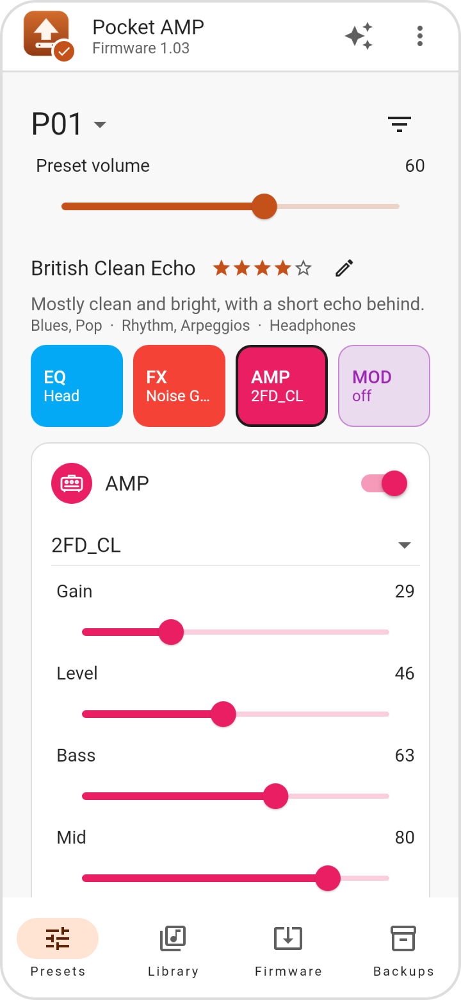
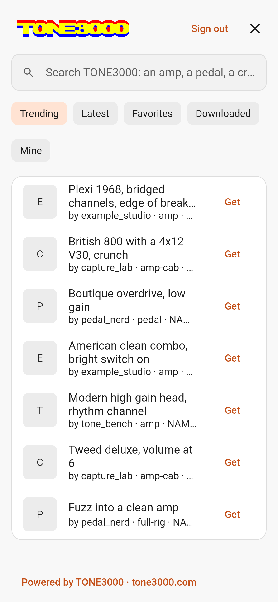

For every Pocket AMP · free and open source
Edit and update your Pocket AMP, whatever brand is on it
Pocket AMP Tools edits the 80 presets live on the pedal, brings TONE3000's amp captures and IRs into the app, loads your own files, keeps your phone and computer in sync and installs the official firmware (currently V1.05) over plain USB, without drivers.
Windows 10/11 · macOS 11+ · Linux x64 (AppImage) · Android 8+ (APK). Community tool, not affiliated with any brand of the pedal.
Sold as the M-VAVE Pocket AMP, the Donner Pocket AMP, the Coolmusic PIXIE1 and the New Bee SK17: one pedal, one app.

What it does
Preset editor, heard live
Volume, signal chain, every block's model and knobs, and the EQ. Each change plays on the pedal as you make it, and nothing is stored until you write it.
TONE3000 inside the app
Search TONE3000, browse what is trending, your favorites and downloads, and get an A2 capture or an IR into the library with one click. How it works
Your own IRs and amp captures
The library sends impulse responses to the 20 CAB slots and A2
.namcaptures to the 20 AMP slots, and remembers which file is where. A WAV in any shape is converted for the pedal. GuideNames, ratings and filters
Give each preset a name, a description, labels and stars, then filter the list. Keyboard shortcuts cover the whole editor.
Backups you can read
A backup is a plain JSON file with every knob by name, and carries each preset's name, labels and rating too. One is taken before each firmware update.
Firmware update with a safety net
The official file from M-VAVE, checked before it is sent, with your presets backed up first and restored after. The app tells you on its own when your pedal is already up to date, and when a new version of the app is out.
Phone and computer in step
Pair your devices once; while the app is open on both, the library, backups and preset notes follow each other on your network. No account, no server. How it works
On your phone, over Bluetooth
On Android and Linux the editor also works over Bluetooth. Firmware updates need the cable.
An assistant, if you want one
Describe a sound and an AI service you choose, with your own key, edits the preset for you. Off until you set it up.

TONE3000, inside the app
TONE3000 is where guitarists share free NAM captures of amps and pedals, and IRs of cabinets. Pocket AMP Tools shows it in the Library: sign in once by approving a code on tone3000.com, then search for an amp, a pedal or a creator, or browse what is trending, the latest, your favorites, your downloads and your own tones.
- Only what the pedal can play is listed: A2 captures for the AMP slots, IRs for the CAB slots.
- Get puts it in your library, checked like any file, ready to send to a slot.
- Captures made with their cabinet (amp-cab) turn the pedal's CAB block off, so the sound does not go through two cabinets.
- Each tone shows its creator and license, and opens on tone3000.com with one click.

Which pedals
| Sold as | Status |
|---|---|
| M-VAVE Pocket AMP | The pedal the app was built on. |
| Donner Pocket AMP | Updated to V1.05 by an owner, presets kept. |
| Coolmusic PIXIE1 | Updated to V1.05 by an owner. |
| New Bee SK17 | Updated to V1.05 by an owner. |
| Another name | Presets, backups and library if it keeps its presets like a Pocket AMP; firmware updates once an owner reports it. |
How to update the firmware
- Charge the pedal, connect it with a USB data cable and turn it on.
- Close the M-VAVE app and anything else that uses MIDI.
- Open Pocket AMP Tools. It detects the pedal and shows the installed version.
- In the Firmware section, click Download from M-VAVE, or open a
.fwscfile you already have. - Click Update firmware and wait about two minutes. The pedal restarts twice.
- Click Restore my presets from before the update.
To see the installed version on the pedal, hold Home and press >. Other brands, a stopped update and common errors are in the firmware update guide.
Why use it to update
| M-VAVE updater | Pocket AMP Tools | |
|---|---|---|
| Systems | Windows only | Windows, macOS, Linux, Android |
| Firmware | Bundled file, older than the downloads page at the time of writing | Current official file from M-VAVE's server |
Questions
Does it work with my Donner Pocket AMP, Coolmusic PIXIE1 or New Bee SK17?
Yes. They are the same pedal as the M-VAVE Pocket AMP under another name, and owners of each one have updated theirs to firmware V1.05 with this app. Editing presets, backups and the library work the same on all of them. A firmware update asks for a separate confirmation, because afterwards the pedal reports itself as a Pocket AMP and there may be no firmware of the original brand to go back to.
My pedal has another brand on it. Will it work?
Probably, if it is a Pocket AMP inside. A pedal whose name is not on the list but keeps its presets like a Pocket AMP is detected as presets only: editing, backups and the library work, and firmware updates stay blocked until an owner confirms the name. A different pedal that speaks the same protocol would be bricked by this firmware, so it is refused. Report yours on GitHub to get it listed.
How do I update the Pocket AMP firmware on a Mac or on Linux?
M-VAVE's updater runs only on Windows. This app runs on macOS 11 or newer, Linux, Windows and Android: connect the pedal with a USB data cable, open the Firmware section, click Download from M-VAVE, then Update firmware. On a Mac the app is not signed, so the first time right-click it and choose Open.
Will the update erase my presets?
A firmware update can overwrite some presets and their EQ. The app backs up all 80 presets and their EQ before updating, and restores only what changed. You can also save a backup to a file at any time.
Can I load my own IRs and NAM amp captures?
Yes. The Library section sends an impulse response to any of the 20 CAB slots and an A2 .nam capture to any of the 20 AMP slots. A WAV in any shape (another sample rate, stereo, 16-bit, longer) is converted to the one the pedal takes when you add it. The pedal cannot give a file back, so the app remembers which one went to which slot. The IR and NAM guide has the details.
Can I get captures and IRs from TONE3000 without leaving the app?
Yes. In the Library, Get captures from TONE3000 (or Get IRs from TONE3000) signs you in by approving a code on tone3000.com, so the app never sees your password. Then search all of TONE3000 or browse the lists, and Get puts the file in your library. The TONE3000 guide
Can my phone and my computer share the library?
Yes. Pair them once on the Sync devices page by checking the same six-digit code on both screens. While the app is open on both, on the same network, the library, backups and preset names, notes and ratings stay the same on each, by themselves. No account or server: the devices talk to each other, encrypted. How sync works
Does it work on Android or over Bluetooth?
Yes. On Android 8 or newer and on Linux the app reaches the pedal over Bluetooth to read, edit and write presets. Firmware updates always need the USB cable (an OTG cable on a phone). Windows and macOS use USB only.
Do I need a driver?
No. The pedal is a standard USB-MIDI device. Use a data cable: many USB cables only charge.
What if the update stops halfway?
Don't unplug in a hurry. Reconnect the pedal and click Detect pedal. A pedal left in update mode is shown as such, and Resume update writes the firmware again.
Is this an official app?
No. It is a free community tool under GPL-3.0, not affiliated with M-VAVE, Donner, Coolmusic or New Bee. It installs the official firmware file from M-VAVE and does not ship the firmware itself. Use it at your own risk.